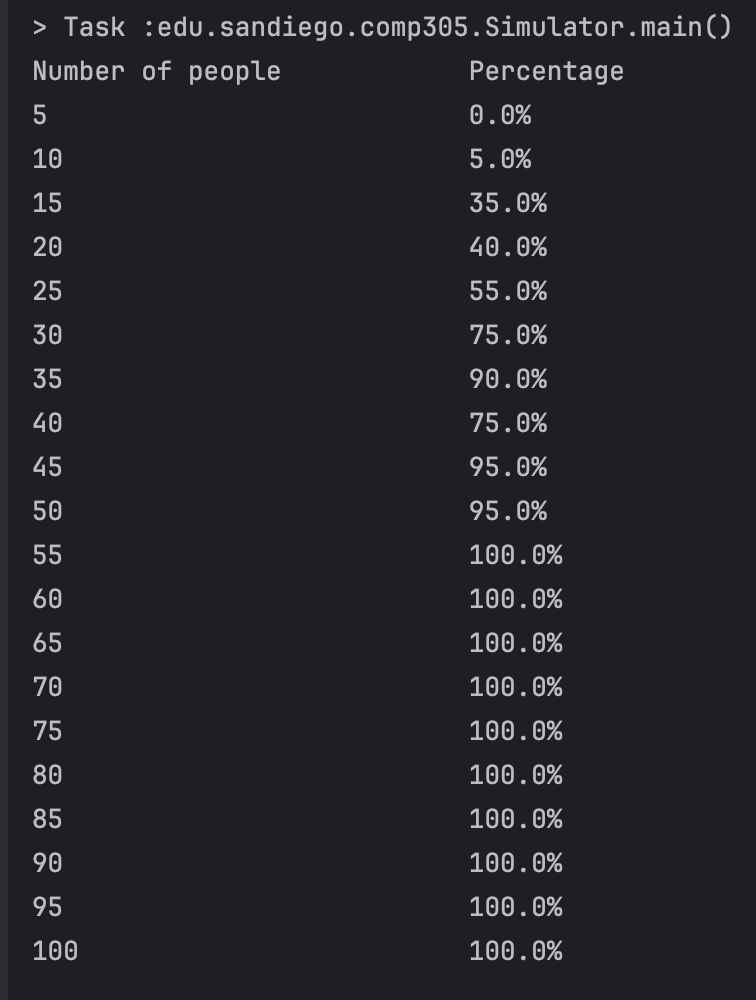
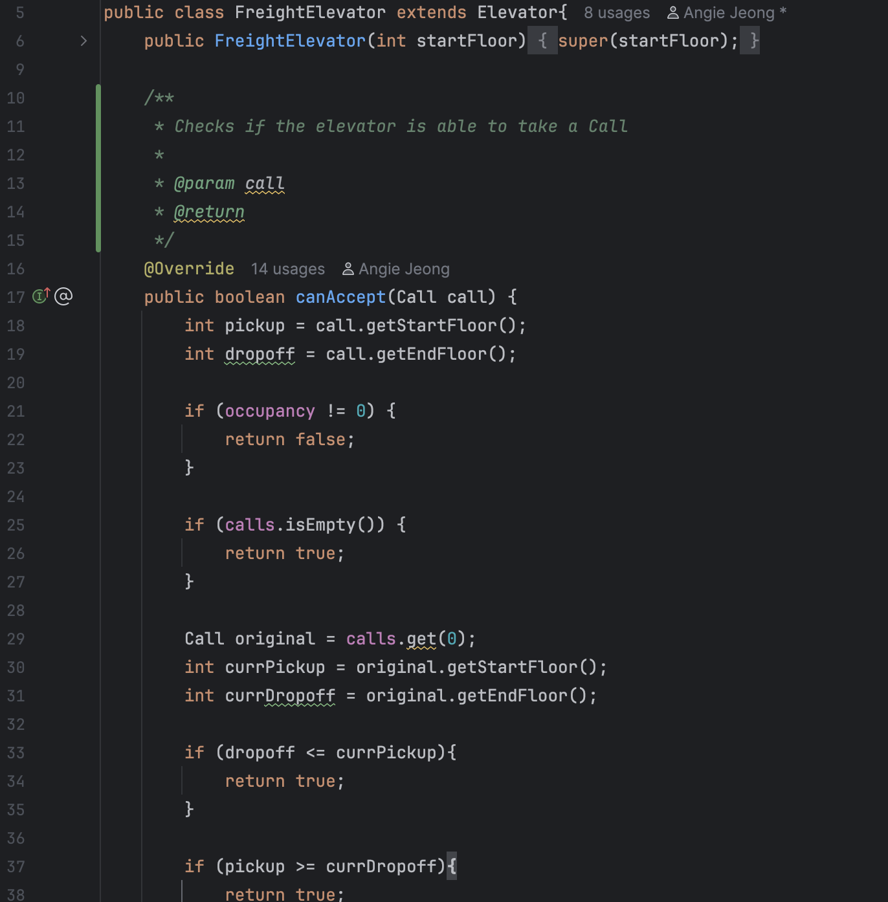
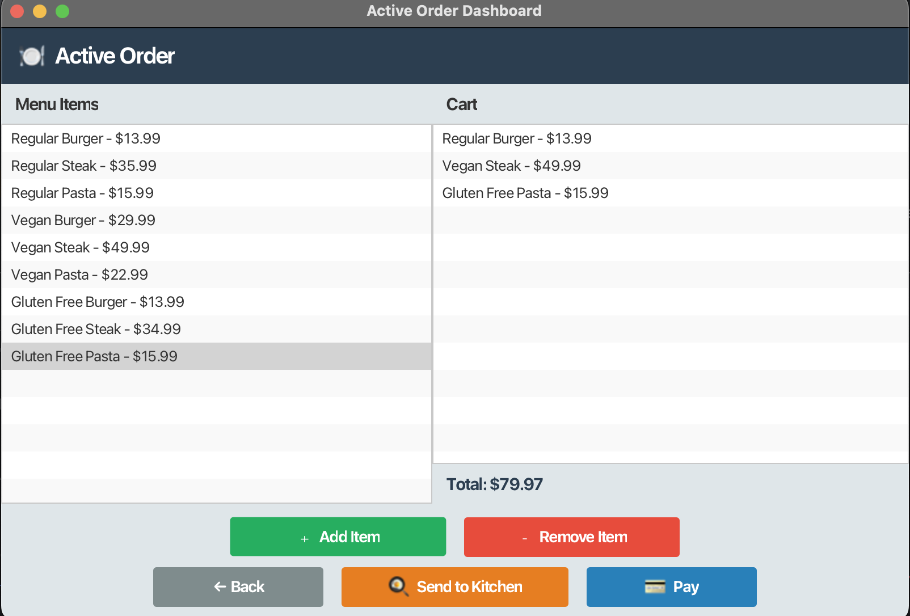

My name is Aiden Domingo, I'm a junior from the University of San Diego majoring in Computer Science. I enjoy working on algorithms and designing abstract, efficient solutions to complex problems using my suite of problem solving capabilities.
I intend to graduate from the University of San Diego in June of 2027 with a major in Computer Science and a minor in Mathematics. Professionally, I have worked as the coach of a rowing program capable of consistently sending crews to the top final at the national level. My experience contributes towards my ability to work collaboratively in a sport dominated by teamwork and developed a talent of being able to bring groups together to work towards a common goal. I also have experience creating and managing an inventory system for Autumn Air, which applied my knowledge of system management and coordinated work to organize and maintain an interface capable of providing HVAC workers with the parts and tools necessary for the day efficently and accurately.
In my free time, I choose to practice and compete with the Divison 1 Men's Crew team at the University of San Diego. I also cycle on the side and enjoy spending time at home with my two chocolate labs, friends, and family. I believe my background in collegiate athletics and consistent training has developed a confidence and discipline in me that enables me to tackle anything I face in life with composure and self-assuredness.
Projects

Sample output from the program when specified to run for 5-100 people.
Birthday Paradox
Motivation: This project was used to reinforce the S.O.L.I.D. principles of clean coding. A secondary focus of the project was learning to collaborate with a team member and use effective commit messages and descriptive pull requests on Github.
Functionality: The program addresses the paradox concerning the probability of two people having the same birthday in a room full of n amount of people. It runs a set number of trials with varying amounts of people in the experiment room.
Design & Implementation: The structure of the experiment relies on trial objects, with each trial creating a random birthday for each person in the room and then returning whether the trial generated a duplicate birthday. Experiment objects manage n number of trials and calculates a ratio of the amount of trials that found a duplicate birthday over the total number of trials the experiment had. A single simulator object contains the main method and manages the experiments, which each have their respective number of participants in each of their trials' rooms.

A snippet of code from one of the Elevator subclasses.
Elevator Simulator
Motivation: This project was centered around the use of test driven development and utilizing the four pillars of object oriented programming to provide focus and structure to our code.
Functionality: The program is intended to simulate a set of elevators, with four possible different types of elevators each functioning in different ways. The standard elevator, freight elevator, penthouse elevator, and express elevator each function in different ways but all service calls assigned to them by schedulers. The program is built to be given any number of each type of elevator and mimic the steps necessary for all the calls to be serviced.
Design & Implementation: The program relies on the usage of interfaces and abstract classes to provide expected behavior and methods that can be implemented in different ways. The differences in elevators and schedulers despite sharing similar parent classes lead the user to be able to store their objects in their parent class's container. Child classes inherit blueprints for expected methods and in some cases fields (for abstract classes) and methods are overridden to change functionality. This covers upon all four object oriented programming pillars of Abstraction, Encapsulation, Polymorphism, and Inheritance through this methodology.

What a server using the POS system sees.
Restaurant POS System
Motivation: This project is intended to be the summation of content learned through the course of taking COMP 305 with Dr. Olsen and reinforced topics learned such as design patterns, documentation, properly using Github workflow/actions, and planning project design using a UML class diagram.
Functionality: The purpose of the project is to create a functioning restaurant POS (point of sale) system, capable of handling multiple different employee roles and enabling them to interact universally among each other. The server is able to place orders and send their orders to kitchen. They are shown a screen where they can select what the customer orders, send the kitchen ticket in for the food to be prepared, and then collect payment in a variety of different ways by the customer. The chef is able to see all the current kitchen tickets, indicate that they've started preparing them, mark them as ready to be delivered, and then close the ticket out when the order is fulfilled.
Design & Implementation: The front end for the POS system utilizes JavaFX, and the back end uses a variety of design patterns to make the function as streamlined and efficient as possible. Code was written using test driven development, with Mockito enabling developers to test how their code functions with other classes and not depend on the complete or reliable status of a different class. Spotbugs and Checkstyle were used as Github actions so every pull request that was submitted had to go through a rigorous check to ensure written code was consistent in formatting and not leaving open vulnerabilities. The POS system itself is an eager singleton, managing the inventory, bank account, and tracking of tickets and orders. The menu items were created through an abstract factory, which had a factory subclasses create ingredients depending on the meal plan they were created for. The strategy design pattern was implemented to enable the customer to pay in any method they would like (i.e. credit card, cash, digital wallet). Implementing JavaFX to control our front front end was one of the greatest challenges my group faced as we had to learn from nothing how to use it and even just adding it to our dependencies taught us a lot about how our IDEs construct an environment for us ot run our code in and what we can do to manipulate it to produce our desired output.
Contact Me
aiden.a.domingo@gmail.com